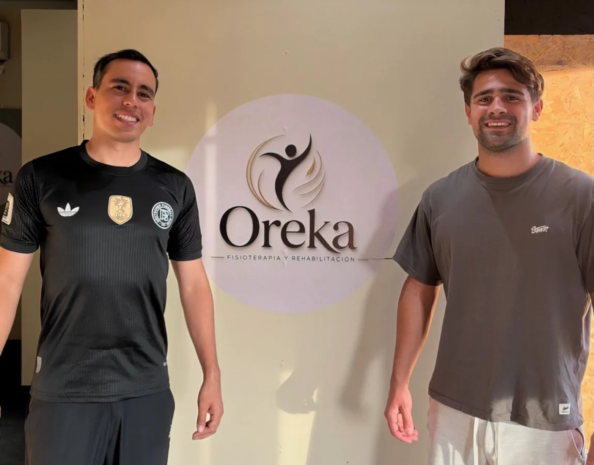

Maqueta · Perfil de Empresa en Google
Oreka Fisioterapia y Rehabilitación
Fisioterapeuta · El Bajío, Zapopan
- Ubicación
- Soccerlife Bajío 3
Av. Circunvalación del Bosque 138, 45017 Zapopan, Jalisco - Horario publicado
- Lunes a viernes, 8:00–20:00
Sábado, 8:00–14:00
Domingo, cerrado - Atención
- Fisioterapia y rehabilitación física y deportiva.